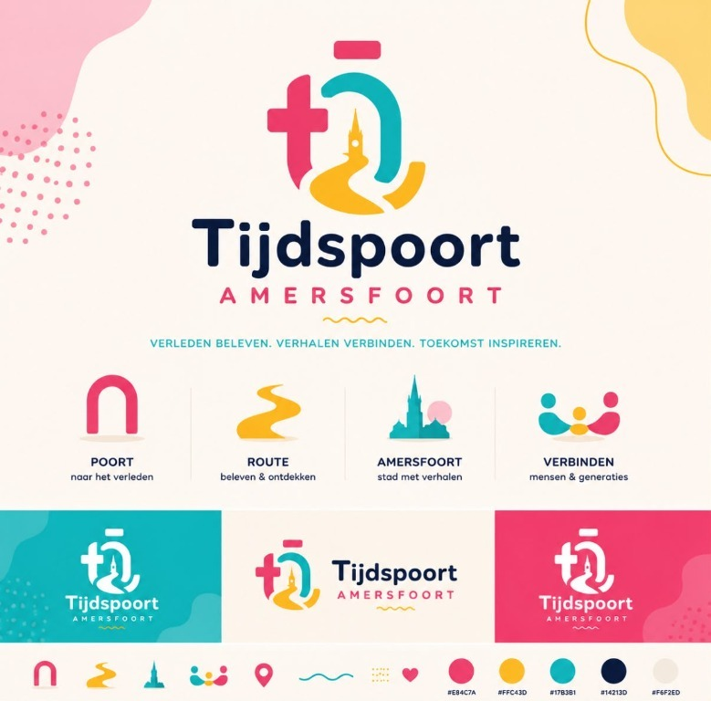

Pam Groenestein
VoorzitterHet bestuur is verantwoordelijk voor de beleidsvorming, toezicht en de voortgang van de doelrealisatie.
Formele informatie
Stichting Tijdspoort bereidt een aanvraag voor de ANBI-status voor. Op deze pagina publiceren wij onze formele gegevens, ons beleid en onze verantwoording.

Deze gegevens zijn bedoeld voor een toegankelijke en duidelijke publicatie van de basisinformatie van Stichting Tijdspoort.
Doelstelling
Stichting Tijdspoort onderzoekt, behoudt en documenteert cultureel erfgoed, maakt dit duurzaam toegankelijk en verbindt historische kennis met digitale technieken. Daarbij wordt ingezet op educatie, cultuurparticipatie en verbinding tussen mensen, generaties en de stad.
Het openbare beleidsplan wordt later verder uitgewerkt en gepubliceerd.
Stichting Tijdspoort onderzoekt, documenteert, ontsluit en maakt erfgoed beleefbaar met digitale technieken.
De ontwikkeling van historische publieksbelevingen, onderwijsactiviteiten, onderzoek, samenwerking en cultuurparticipatie is een kernonderdeel van de werkzaamheden.
Inkomsten kunnen worden verkregen uit subsidies, bijdragen van fondsen, donaties en giften, sponsoring, samenwerkingsbijdragen en toekomstige inkomsten uit activiteiten en kaartverkoop.
Goederen en middelen worden zorgvuldig beheerd en uitsluitend ingezet voor de doelstellingen van Stichting Tijdspoort.
Middelen kunnen worden besteed aan historische ontwikkeling en onderzoek, artistieke en technische productie, educatie, publieksbereik, toegankelijkheid en organisatie.
Het volledige openbare beleidsplan kan later als PDF worden gepubliceerd. De daadwerkelijke downloadlink wordt dan op deze pagina geplaatst.
Het bestuur is verantwoordelijk voor beleid, toezicht, financiën en doelrealisatie.
Het bestuur is verantwoordelijk voor de beleidsvorming, toezicht en de voortgang van de doelrealisatie.
De bestuursleden vervullen hun taken binnen de formele governance van Stichting Tijdspoort.
Bestuur en dagelijkse uitvoering zijn van elkaar gescheiden; de dagelijkse uitvoering maakt geen onderdeel uit van het statutaire bestuur.
De bestuursleden ontvangen geen beloning voor hun bestuurswerkzaamheden.
Vergoeding van werkelijk gemaakte kosten kan plaats vinden wanneer dit overeenkomt met het vastgestelde beleidsplan. De precieze tekst voor directie, personeel en uitvoering wordt vóór definitieve publicatie gecontroleerd.
Stichting Tijdspoort doet periodiek verslag van activiteiten, projecten en samenwerking.
Een korte openbare samenvatting van het actuele activiteitenverslag wordt hier binnenkort toegevoegd. De inhoud zal later worden ingevuld met de actuele stand van projecten en samenwerking.
De jaarlijkse financiële verantwoording bestaat uit balans, staat van baten en lasten en een toelichting.
Stichting Tijdspoort heeft een verlengd eerste boekjaar dat eindigt op 31 december 2027. Er is nog geen afgesloten eerste boekjaar beschikbaar. De eerste financiële verantwoording wordt na afloop van het eerste boekjaar opgesteld en vervolgens binnen de geldende publicatietermijn openbaar gemaakt.
De openbare documenten worden hier in toegankelijke vorm gepresenteerd zodra ze beschikbaar zijn.
Document
Openbare beleidsvisie van Stichting Tijdspoort voor de komende jaren.
Binnenkort beschikbaarDocument
Openbare samenvatting van voortgang, activiteiten en samenwerking.
Binnenkort beschikbaarDocument
Balans, staat van baten en lasten en toelichting.
Binnenkort beschikbaarDocument
Openbaar standaardformulier voor de publicatieplicht van ANBI-informatie.
Binnenkort beschikbaarWanneer deze documenten definitief beschikbaar zijn, kunnen ze hier op dezelfde manier worden toegevoegd met een duidelijke downloadlink en een toegankelijke beschrijving.
Actualiteit